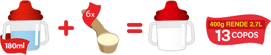
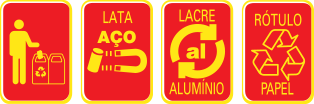
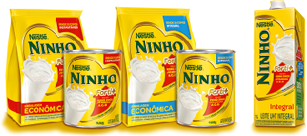
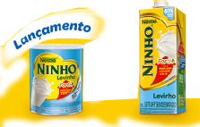
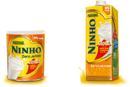

Composto Lácteo com Óleos Vegetais.
Com imunonutrientes* que ajudam a fortalecer as defesas naturais do seu filho.1,2
*Imunonutrientes são nutrientes, vitaminas e minerais tais como Vitaminas A, C e D, Ferro, Zinco, Selênio, importantes para auxiliar no funcionamento do sistema imunológico.1,2
Toda mãe já pensou em tudo na hora de cuidar de seu filho. Por isso, NINHO® Fases é um composto lácteo que oferece uma nutrição especializada para a fase em que ele precisa de mais cuidado.3
PARA PREPARAR 1 COPO (200ml): Em um copo com água morna ou fria (180ml), coloque seis colheres medida ou duas colheres de sopa cheias (29g) de NINHO® Fases 1+ e misture bem.
 *Instruções de modo de preparo conforme a embalagemGuardar a lata em lugar fresco e seco. Após a abertura da lata, o produto conserva-se bom para o consumo até o prazo máximo de 30 dias.
A idade de introdução do produto deverá seguir as orientações do médico e/ou nutricionista que acompanha seu filho, porém, é comum a introdução após a fórmula infantil de seguimento para lactentes e crianças de primeira infância.
INGREDIENTES: leite parcialmente desnatado, maltodextrina, óleo de milho, óleo de canola, lactose, frutooligossacarídeos, oleína de palma, inulina, minerais, vitaminas e emulsificante lecitina de soja. NÃO CONTÉM GLÚTEN.
ALÉRGICOS: Contém derivados de soja, leite e derivados.
COMPOSTO LÁCTEO COM ÓLEOS VEGETAIS.
ESTE PRODUTO NÃO É LEITE EM PÓ.
Dimensões:Lata Ninho® Fases 1+ 400g
Largura: 105
Comprimento: 105
Altura: 124mm
Conheça toda a nutrição que NINHO® pode oferecer, com o sabor incrível que as crianças amam.
Com imunonutrientes* que ajudam a fortalecer as defesas naturais do seu filho.1,2
NÃO CONTÉM GLÚTEN.
*Imunonutrientes são nutrientes, vitaminas e minerais tais como Vitaminas A, C e D, Ferro, Zinco, Selênio, importantes para auxiliar no funcionamento do sistema imunológico.
Contém vitaminas e minerais que estão entre as principais necessidades das crianças.
NINHO® Forti+ Integral
 Leite em pó Integral e Instantâneo Leite UHT IntegralNINHO® Forti+ Levinho
 Leite em pó Semidesnatado instantâneo Leite UHT SemidesnatadoNINHO® Forti+ Zero Lactose
 Composto lácteo com maltodextrina para dietas com restrição de lactose.0% lactose Leite UHT integral para dietas com restrição de lactose.0% lactoseNÃO CONTÉM GLÚTEN.
1. Sazawal S, Dhingra U, Dhingra P, Hiremath G, Kumar J, Sarkar A, Menon VP, Black RE. Effects of fortied milk on morbidity in young children in north India: community based, randomized, double masked placebo controlled trial. BMJ.2007 Jan 20;334(7585):140.
2. Sarni R, Souza F, Cocco R, Mallozi M, Solé D. Micronutrientes e sistema imunológico. Rev. bras. alerg. imunopatol. – Vol. 33, Nº 1, 2010
3.Sociedade Brasileira de Pediatria. Manual de orientação para alimentação do lactente, do pré-escolar, do escolar, do adolescente e na escola. Departamento de Nutrologia, 3ª ed. Rio de Janeiro, RJ: SBP; 2012. 148 p.